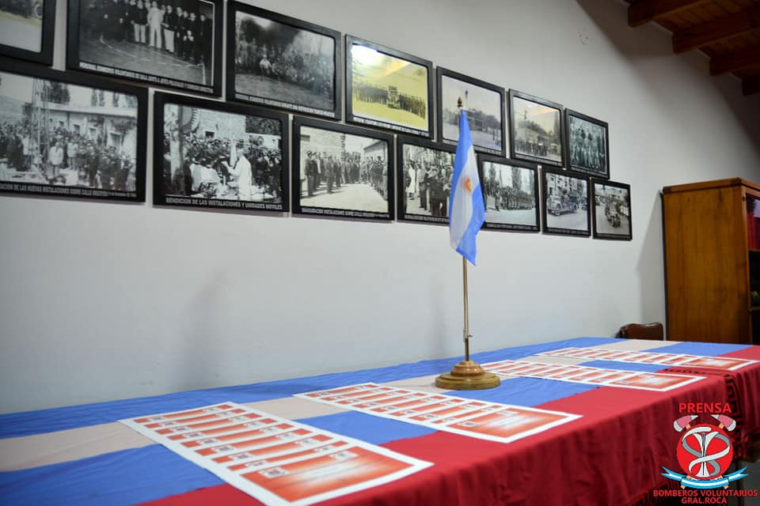
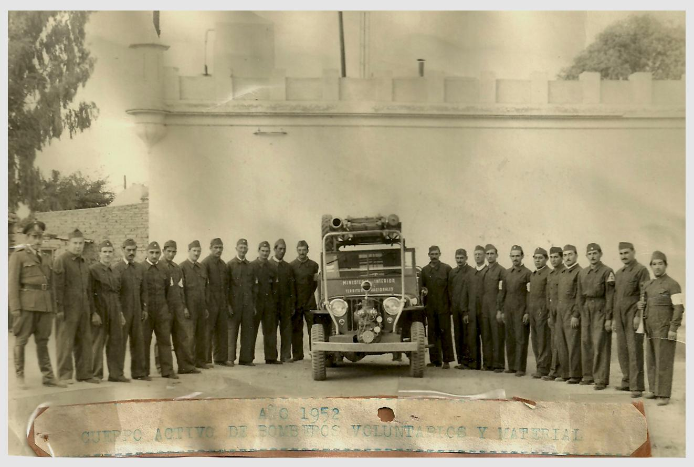
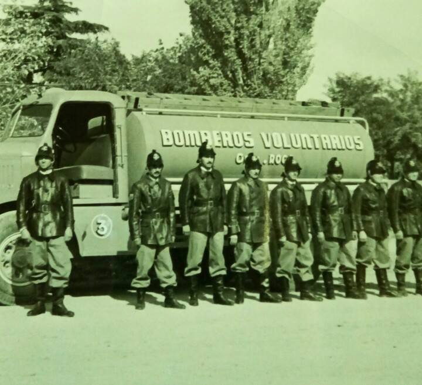

Fotos Históricas
Conocé nuestra história a través de fotos y material de la época.

Año 1952
Primer Auto-Bomba y Cuerpo de Bomberos Voluntarios.

Ejercício en la escalera vertical con vientos
Al fondo se aprecia el primer Cuartel de Bomberos Voluntarios (29 de Diciembre 1949 al 22 de Mayo de 1953), en el patio de la Comisaria Local.

Movil N° 3
En 1955 se agrega el tercer auto-bomba sobre un chasis SKODA FWD cedido por la Gobernación de la Provincia un tanque de 7500 litros de agua, con su bomba de expulsión, convirtiéndose en el primer camión cisterna propio.